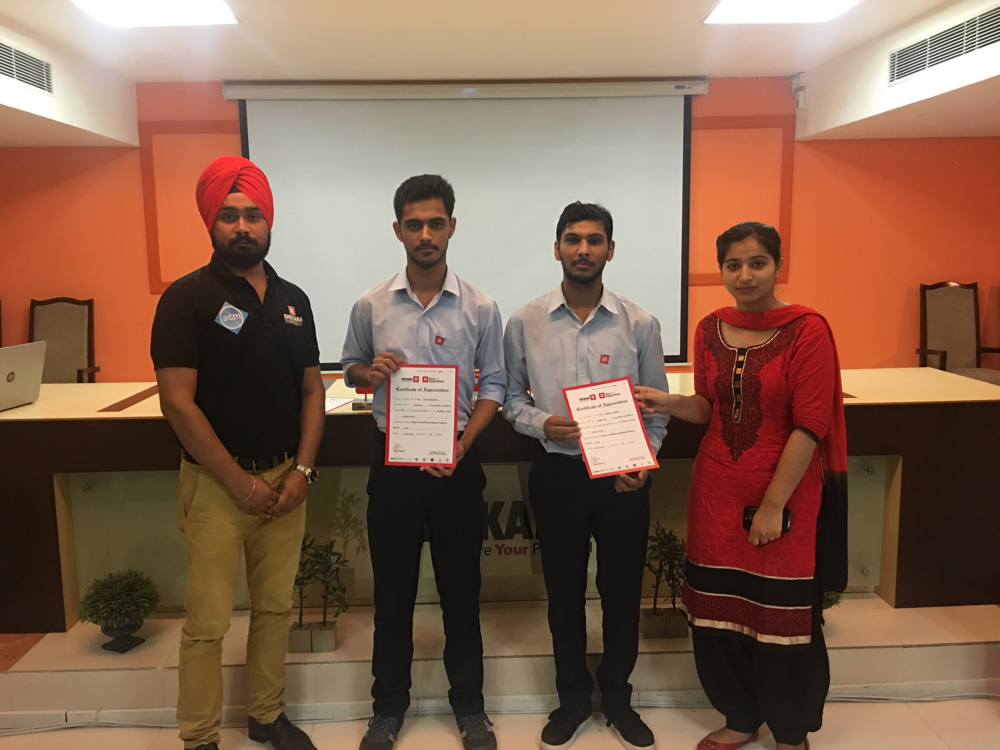
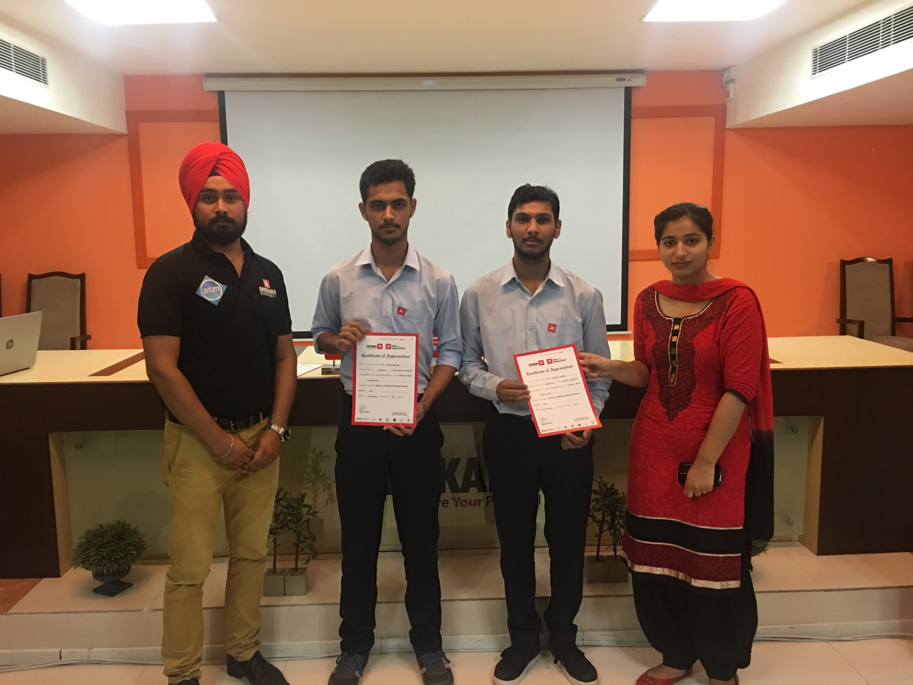
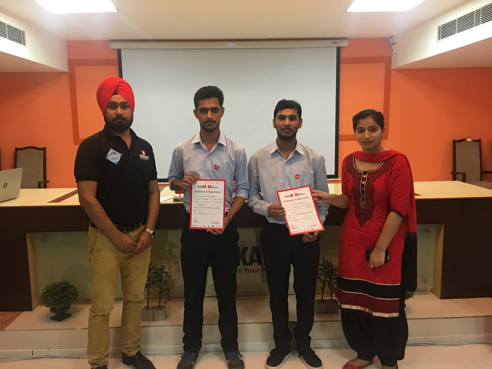
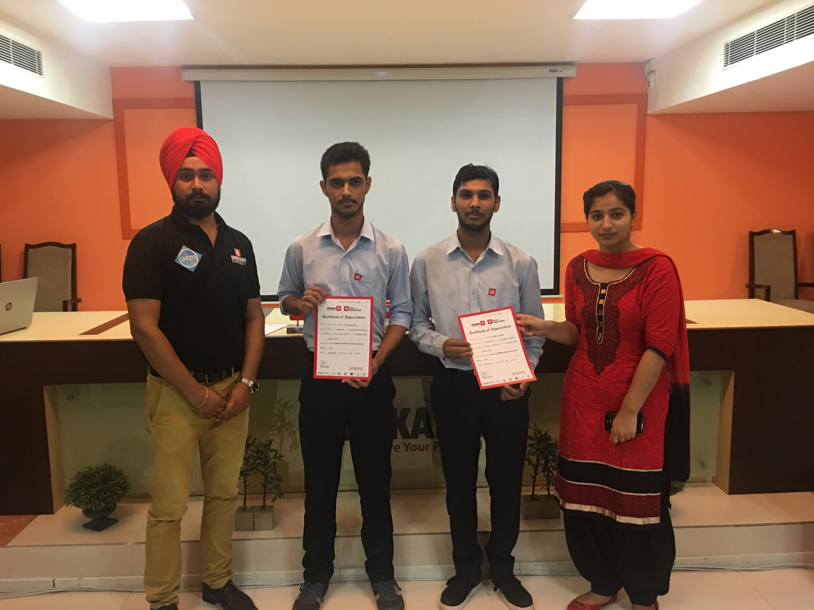

2017

 


.jpg)


 

Association for Computing Machinery
Chitkara University

According to the famous saying of Mrs. Kirthiga Reddy, Head, Facebook india “i strongly believe that the first step and the most important tool towards women empowerment is education. The right education will ensure that women are more competent and confident in taking up bigger challenges and raising the bar in any field”. To promote women in engineering, acm student chapter, department of computer science and engineering organized a 24-hour national level hackathon in collaboration with acm-w and oracle academy on 2nd -3rd oct, 2017 for girl students. 3rd of october marked the end of the hackathon. This journey of the hackathon started with the participation of 308 enthusiastic and tech-savvy teams from all over india with the theme of digital india. A team of 52 highly professional members from acm india, chitkara university, and oracle academy was formed to review the ideas and select the best 20 teams out of it. The selected 20 teams were then promoted to the next round which was held on 9th september 2017. After in-depth discussions with all the 20 teams, 10 teams were filtered were hence promoted to the final round. The top 10 teams and one wild card entry accompanied by their respective mentors were invited to chitkara university on 2nd october 2017 and were given 24 hours to successfully run their application and showcase their idea to the judging panel. Dr. madhu chitkra, honorable vice-chancellor of chitkara university also addressed the students and gave prizes to the top three winners. Top three teams got 24000/, 15000/ and 12000/ respectively as a prize money and were given chitkara university goodies.

ACM Student Chapter in association with Department of Computer science and Engineering organized workshop on topic “Node.js” on 6th -7th September 2017 in Mooc Hall. The speaker of the occasion was Dr. Rimpi Sharma from VCL infotech. She has 15 years of experience in the field of IT Training and development sector. 70 Students participated in the workshop. The session was highly knowledgeable. The session covers the concept of nodejs, javascript and database connectivity for the web page. Session was highly interactive and appreciated by the students.The Students who attended full workshop got their certificates too . The students present in the workshop definitely gained some knowledge about nodejs and javascript. ACM team with their coordination and hardwork made the event successful
.jpg)
ACM Student Chapter, Chitkara University, organised a half-day fun cum technical event “Conjecture”, on 3rd August 2017 in Bernoulli Hall. A total of 35 teams, and 70 participants, spread across the CSE Department from 2nd and 3rd year, took part in this workshop. First round, named “Handy-Tech”, required a single member from each team to outline their right hand on a sheet of paper within 1 minute, and within that outline including the maximum number of technical words they could in a time-span of 2 minutes. Only 15 teams managed to surpass this round. These results lead to the second round, named “Crypt-o-gizmo”, which involved solving aptitude and logical reasoning questions, thrown in with gadget questions of which a tech junkie would be proud of, made an excellent test of a team’s rationale thinking and knowledge. Only five teams made it through to the final round, titled “Buzzzzzz…”.A buzzer round, it consisted of 10 objective questions based on various disciplines of the computing world, which were designed to test a team’s coordination, reflexes and knowledge in the aforementioned streams. This intensely contested round gave us our winners Mr. Karan Nagpal, and Mr. Ketan Bansal from CSE 3rd year and gave us our runner-ups Miss Ishani and Mr. Ishwinder from CSE 2nd year. The winner were given trophies and certificates. This event served as a platform for every participant to test themselves and their knowledge at an excellent level.

ACM Student Chapter, Chitkara University, in collaboration with ACM India and CSPathshala, organized a one-day workshop on the topic Bringing Computational Thinking to School, on 15 July, 2017 at Chitkara International School, Sector-25,Chandigarh. The main goal of this workshop was to impart pedagogical as well as content training to teachers.Interacting with 165 delegates in the workshop was Ms. Sonia Garcha, CSpathshala Volunteer, Program Associate – CSR, Development Support Team along-with guest speaker Mr. Madhavan Mukund, President of ACM India and Professor and Dean of Studies, Chennai Mathematical Institute, Chennai. This workshop imparted training to the teachers on problem solving and computational thinking, which enabled them to learn more about topics such as, decomposition, patterns, abstraction, algorithms, analysis and programming with day to day examples. Finally, at the end of the workshop, teachers received CS Curriculum and Participation certificates. The workshop served as a huge step towards fulfilling the ultimate goal of CSPathshala, i.e. to impart computing as a science to every child in every school in India, as teachers are the one of the most important building blocks towards the process of building a young ,Digital India.
.jpg )
ACM Student Chapter, Chitkara University organized a workshop on the topic “CS Curricula” on 15th July, 2017 in Pulitzer Hall. The session witnessed a turnaround of about 45 participants, comprising of faculty members of Chitkara University Punjab, Chitkara University Himachal Pradesh and CURIN department. The speaker on the occasion were Dr. Madhavan Mukund, Dean of Studies and a professor of Computer Science at Chennai Mathematical Institute, also the President and Member (Executive Council) of Indian Association for Research in Computing Science (IARCS) and the President of Association for Computing Machinery India Council and Dr. Abhijit Vichare, fellow at Persistent Systems Ltd and member of ACM india council. ACM Student chapter organized a CS Curricula workshop, One of the activities of ACM-IEEE CS2013 Computing Curricula model developed by the ACM and IEEE group in 2013. A highly interactive session ends up with an active level of the faculty members with real life examples. Audience gained lot of knowledge and exposure by data analysis done on operating system course and impact of course content on the performance of student.

ACM Student Chapter Chitkara University organized an event Technovation in which Third year students of BE CSE displayed their Integrated Projects in different categories. The event started with the arrival of highly reputed Externals from various domains ranging from academicians to corporate world. Venues were embellished with Poster Presentations. The students showcased their Projects. The evaluations of students were highly appreciated by the examiners. The Projects of students were commendable and also inspiration for other students too. ACM society as a team did a lot of hardwork to make the event worth it and proved that team work is all what you need to make any event successful. ACM Student Chapter, Chitkara University wishes to have such more events in future.

ACM Student Chapter, Chitkara University in collaboration with CCET organized the event “CODATHON” on 23rd March, 2017. Approximately 33 teams (each team consisting of 1 to utmost 4 members) participated in the event. It was a Coding competition where participants were challenged to adduce their coding skills. The contest was on platform named “HACKEREARTH”. The participants were given freedom to choose any Coding language. There were total of 18 brittle questions which were to be justified in the given time period of 2 hours. The contest was crunchy and students proved their coding skills with great zeal.

ACM Student Chapter of Department of Computer Science & Engineering, Chitkara University, Punjab, organized a Hostel activity “Noughts & CroXes” on 27th April, 2017 in which students participated with full enthusiasm and showcased their sports skills. The event had 2 round. The first round was “Giant Tic-Tac-Toe”. The second round was “Blind Football” in which one player had to score a goal while blind folded and partner had to guide. Total of 12 teams participated in the event. Top two teams were awarded with Certificates and Goodies.

ACM Student Chapter from Chitkara School of Computer Science organized an industrial visit to Infosys Chandigarh on 8/4/2017. 70 students of CSE and members of ACM Chapter visited the site. The event started with the presentation given by Ms. Manisha and Mr. Kanwarpreet Singh, who discussed Software Testing skills including SDLC life cycles, Automated Testing, Agile methodology& various tools used for this. The session continued with the demo of few live projects of Infosys & testing performed on them. Each and every student visited there came with experience and a lot of knowledge.We got positive feedback from the students and ACM team with their coordination made the visit a successful visit.

ACM Student Chapter (Department of Computer Science and Engineering) has invited Mr. Chandra Shekhar (COO of ACM india) for a visit to our campus (Chitkara University Punjab) on 1st April, 2017. During the campus visit, he attended a meeting with Dr. Archana Matri, Dr. Rajnesh Sharma and Ms. Meenu Khurana. During the meeting, he discussed various ACM India events and also suggested few of them to be conducted by Chitkara University. CS-Pathshala, Summer School workshop, ACM-W and ESP were the Pioneer event to be hosted by Chitkara University. It was wonderful meeting him.ACM Student Chapter hopes to have such more amazing meets with dignified personalities like him.

ACM Student Chapter ,Chitkara University in collaboration with CCET organized the event “CODATHON” on 23rd March,2017 . Approximately 33 teams (each team consisting minimal of 1 member to utmost of 4 members) participated in the event. It was a Coding competition where participants were challenged to adduce their coding skills.The contest was on platform named “HACKEREARTH”. The participants were given freedom to choose any Coding language. There were total of 18 brittle questions which were to be Justified in the given time period of 2 hours. The contest was crunchy and students proved their coding skills with great zeal. ACM team once again proved their amazing coordination and made the ‘codathon’ a successful event.
ACM Student Chapter Chitkara University organized an event AARDA in which second year students of BE CSE displayed their Integrated Projects in different categories. The event started with the arrival of highly reputed Externals from various domains ranging from academicians to corporate world. Venues were embellished with Poster Presentations. The students showcased their Projects. The evaluations of students were highly appreciated by the examiners. The event reached its zenith with the involvement of students from Sections of CSE 2nd Year (E to H). All the students participated in the event were full of enthusiasm and each one of them was amazing with his/her project. The students received accolades with Eminent award, Star award and Consolation prize. ACM Student Chapter,Chitkara University with their coordination made the event successful.

ACM Student Chapter, Chitkara University organized a DSP (Distinguished Speaker Program) on the topic “What does engineering mean to a student” on 15th March, 2017 in Pulitzer Hall. The session witnessed a turnaround of about 200 participants, comprising of students from CSE and M.Tech department and faculty members from the CURIN & CSE department. The speaker on the occasion was Dr Amit Nanavati, Senior Researcher in Analytics and Mobile-Enabled Solutions Group at IBM Research, India.He has been one of the main proponents, and a true standout in his field from past several years. He has been named as the master inventor in 2011, and has over 50 plus publications and 37 US patents to his name. Also, he became an ACM Distinguished Speaker in 2014 and ACM Distinguished Scientist in 2015. A highly interactive session ends up with an active level of participation from the students and the faculty members with real life examples. Audience gained lot of knowledge and exposure of real-life projects like Virtual Chemistry Labs, Voice Talk, etc. from an established personality Dr Amit Nanavati.

ACM Student Chapter, Chitkara University organized a half day fun cum technical event titled “ENiGMA” on 2nd February, 2017, in which 22 teams partcipated. The event consisting of three rounds tested students on visual, creative and technical level and helped in bringing out the best in them. The first round ”Word cloud” involved participants searching for technical terms from a collection of 4 different images in a time span of 5 minutes. Only 17 out of 22 teams managed to cross the first hurdle. The second round ”PhotoRumble” in which collage of four pictures were shown and they have to write their own story. This time just 10 teams managed to progress to the final round. The round three “Luck By chance” involved the remaining participating teams to pick out a slip, which contained the topic on which they will be getting coding questions on. Out of total 6 questions, the teams had to solve the maximum questions in 45 minutes. The competition was tough and teams proved their “coding skills” with great zeal. First position was bagged by Kartik Gandhi and Kashish Singal of CSE 2nd year and 2nd position was bagged by the team of Harshpreet Kaur and Isha Saxena of CSE 2nd year.